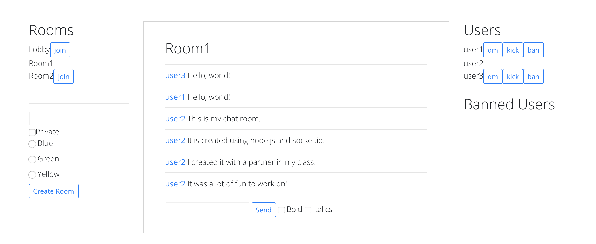

Project archive / Development
Node.js Chatroom.

Overview
This is a project I co-created in my Rapid Prototype Development and Creative Programming course. It uses Node.js and Socket.io for communication between the server and client, Bootstrap for styling, and JavaScript for functionality.
The chat server lets users create multiple rooms, join open rooms, send direct messages to other users in their room, and create password-protected private rooms. Room creators can change the background color, ban users, or remove users from a room.
Socket.io handles the actions, so the chatroom runs on a single page without requiring refreshes or new page loads.
View repository (opens in a new tab)